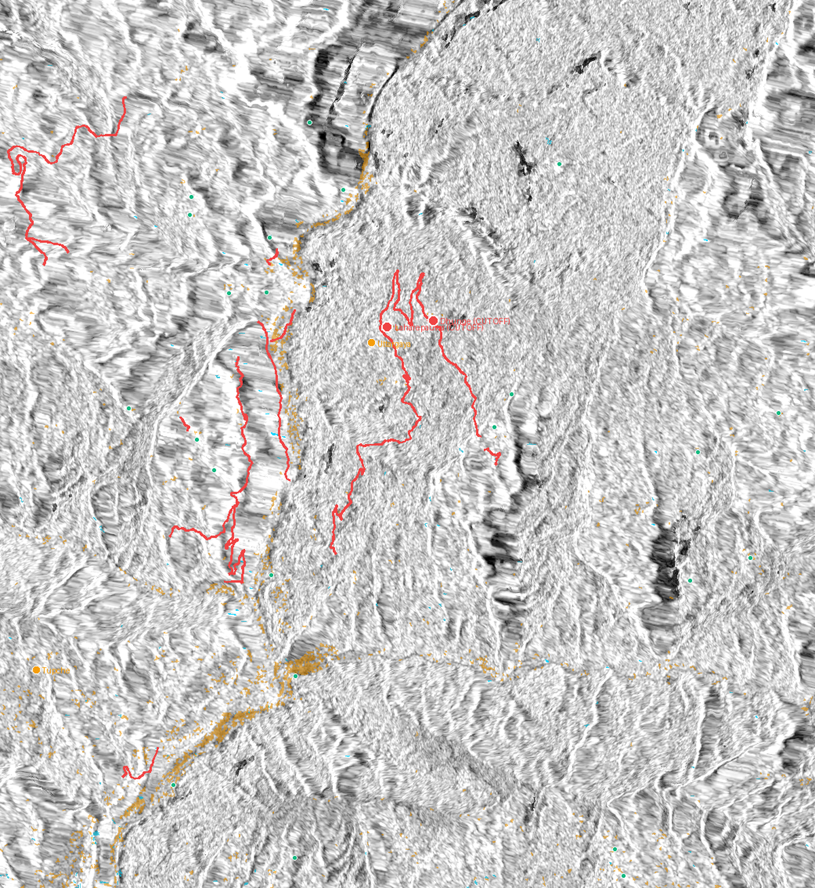

SNUNet Flood Water (2.87 ha)
Permanent River (10.7 ha)
Candidate Change (138 ha)
Exposed Road / Cut-Off
Satellite Observation Baseline
| Parameter | Analytical Specification |
|---|---|
| Sensor / Mode | Sentinel-1 RTC (C-band SAR, 10m grid) |
| Pre-Event Pass | 2026-08-24 00:18 UTC (Orbit 19 Descending) |
| Post-Event Pass | 2026-09-05 00:18 UTC (Orbit 19 Descending) |
| Analysis Extent | 85.15°E–85.25°E, 27.95°N–28.05°N |
| Unpadded Valid AOI | 109.51 km² (Padded grid: 118.05 km²) |
| Elevation Range | 512 m to 3,485 m (Copernicus DEM 30m) |
Settlement Accessibility (Conservative Corridor Closure)
| Settlement | Baseline | Post-Event Status |
|---|---|---|
| Laharepauwa | 5.31 km | CUT-OFF (Corridor Closure) |
| Dhunge | 3.08 km | CUT-OFF (Corridor Closure) |
| Tupche | 4.99 km | DETOURED (+0.68 km) |
| Uttargaya | 7.37 km | DETOURED (+4.42 km) |
| 23 Other Hamlets | Variable | UNAFFECTED (incl. Betrawati) |
Infrastructure Exposure Summary
Road Network: 12 unique OSM highway ways (totalling 190.1 m direct intersection) are inundated by the primary flood extent. Under the conservative corridor closure model (closing entire breached ways), 1,436 graph edge fragments (26.14 km) are removed. Strict fragment-level traversal severs 25 edges (383.9 m) with 0 cut-offs.
Bridge Infrastructure: 25 bridges assessed within the AOI; 0 confirmed bridge structural collapses under primary flood extent.
Bridge Infrastructure: 25 bridges assessed within the AOI; 0 confirmed bridge structural collapses under primary flood extent.